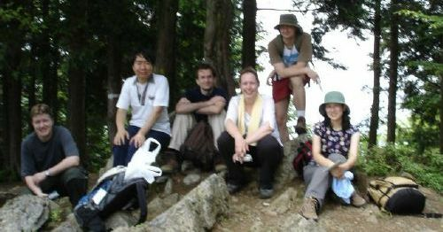
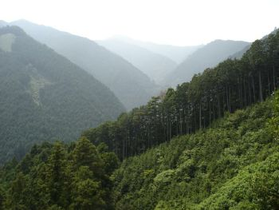
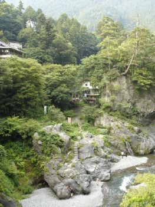
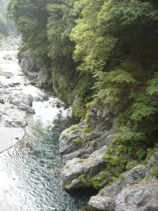
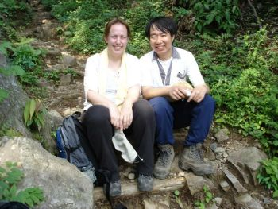

|  |  | ||
|  |
Five of
us left Tsukuba at 5.30 am (Zsolt, Midori, Gunther, Tadashi, and
Ginny) and drove to Okutama arriving earlier than anticipated at
around 7.30am. Since we still had a bit of time before Michael's
train was due, some of us explored the river and station area.
Michael arrived on schedule at 8.21, and so we got started. And
lost. Fortunately some friendly locals sent us back on the right
track, and we saw the huge sign we'd missed pointing us in the right
direction for Honita yama. The trail led up a steep path for about
an hour and a half to the summit -- it was very hot, too, and
Michael (on his first experience of mountains in Japan) was feel a
bit queasy, so Ginny and Tadashi accompanied him back down the
shortest route to Hatanosu, while Gunther, Zsolt and Midori went on
to do the planned route via Kawanori yama. Back in Hatonosu, after
seeing Michael onto a train back to Chofu, we went for an onsen in
Okutama, collected the car and returned to Hatonosu to wait for the
others. Since they hadn't yet called in, we walked down to the
river, where we were amazed to discover a stunning riverscape with
green pools, white rapids, waterfalls, rocky outcrops and caves. The
others turned up around 4.30 tired from their long walk in the heat,
but we forced them to walk down to have a look at the river anyway.
Then we got back on the road and were pleasantly surprised to find
the traffic via the Kanetsu expressway wasn't too heavy, so we were
back in Tsukuba soon after 7pm or so. We had dinner at Yamato zushi,
and still managed to get an early night!
|
 | |
|  | |||